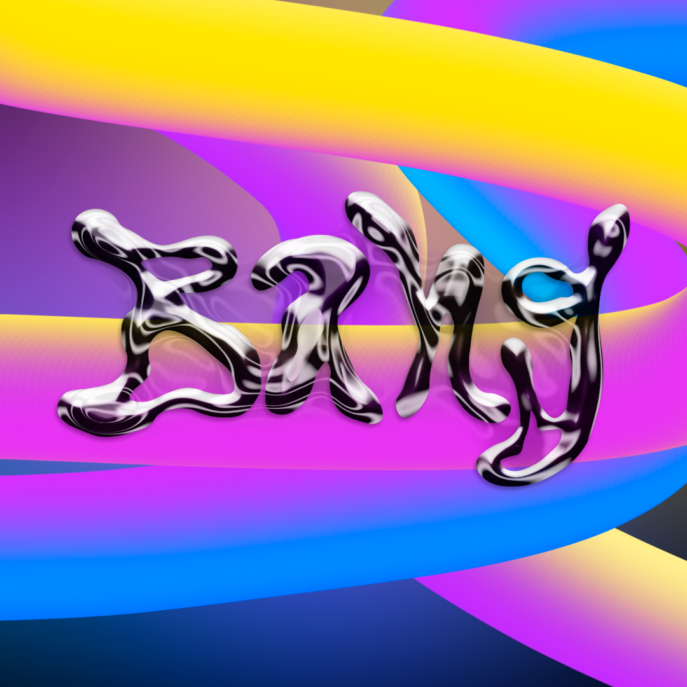
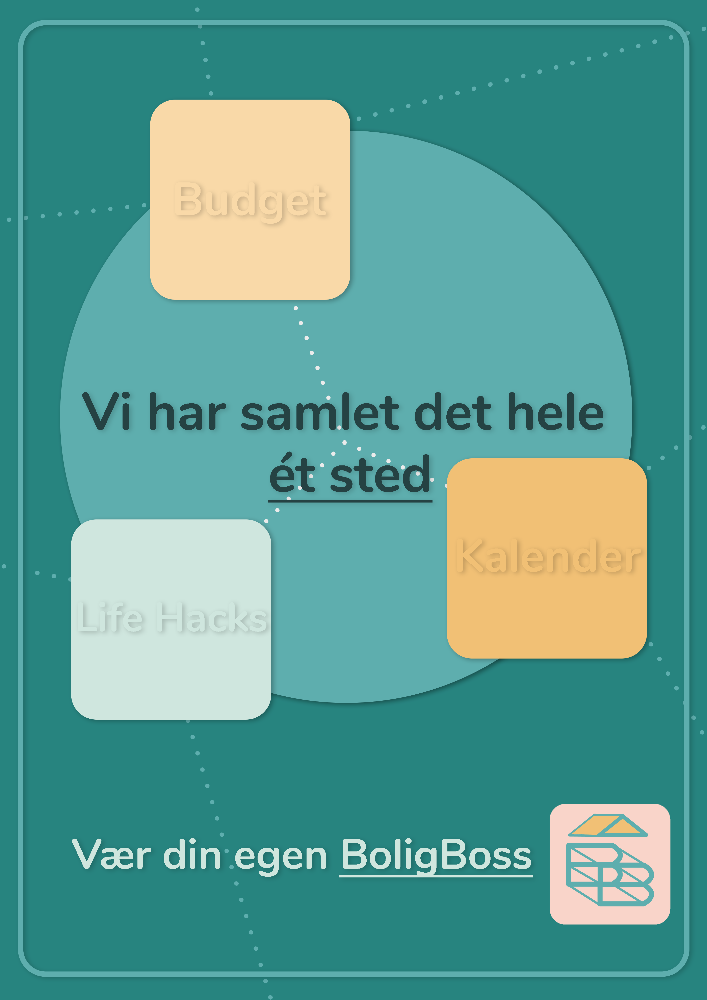
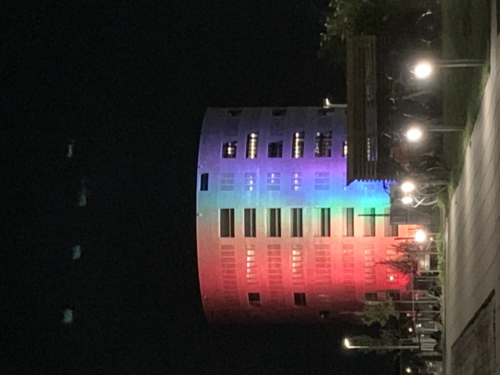
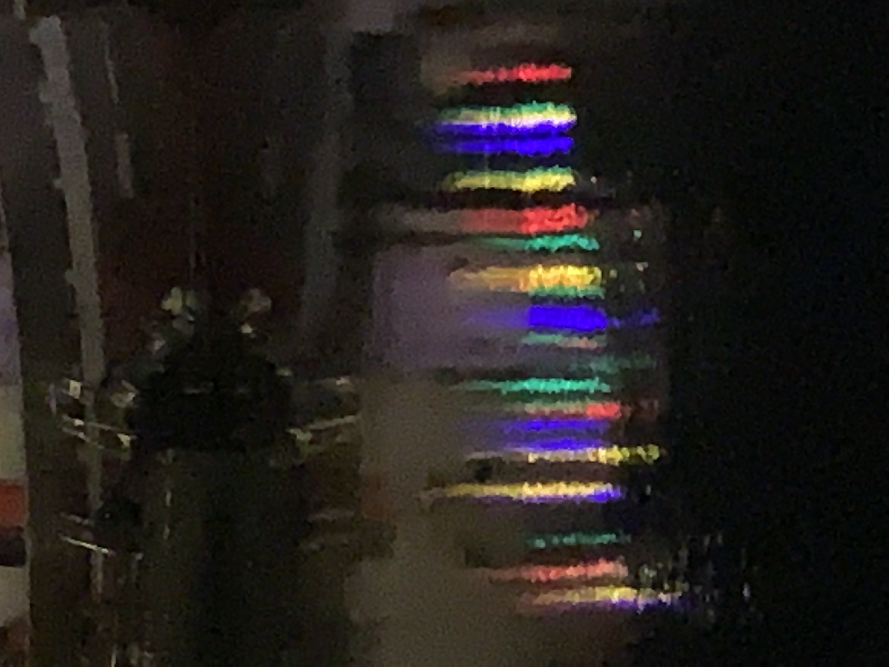
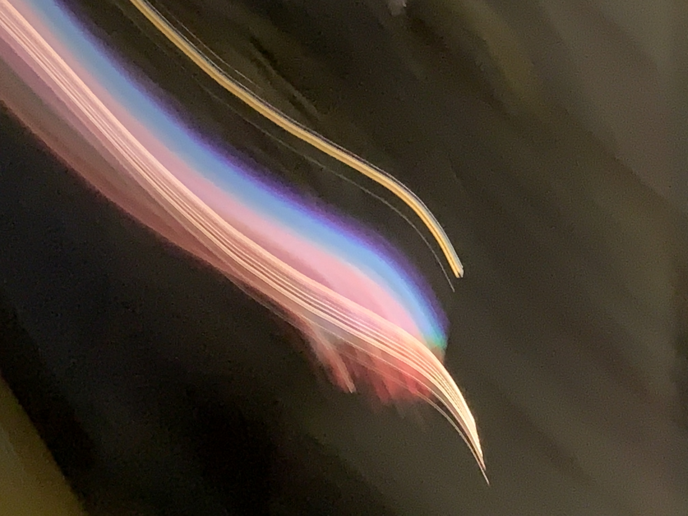

Mine projekter
Leg med logo
Lavet i Adobe Illustrator og Photoshop. Her har jeg leget med mit logo som kan ses øverst på siden.
Farverne på tuberne i baggrunden giver en god kontrast, der giver det en
legende effekt.
BoligBoss hjemmeside & app
Plakat for appen BoligBoss.
BoligBoss er en protetype af en app og hjemmeside, som
jeg har været med til at lave.
Appen og hjemmesiden hjælper unge mennesker med
at få styr på deres daglige gøremål og økonomi.

Protetype af BoligBoss app. Appen er lavet i samarbejde med andre Zealand studerende.

Underside af hjemmeside “Hvorfor BoligBoss” kodet af
mig. Her kan man se hvordan jeg har tænkt over designet af
siden,
og hvordan den spiller sammen med appen.
Eksempel på SoMe der passer til appen BoligBoss.
Her har jeg arbejdet
med de samme farver og bløde
firkanter, som går igen i vores app og hjemmeside.
Ride with Pride
  Ride with Pride er en billedserie taget under WorldPride Copehagen
I sommeren 2021.
Billederne er med til at vise vigtigheden i
at føle sig synlig som queer person i det senmoderne samfund.
Dog er det også en kritisering af regnbuekapitalismen, da firmaer lever
af at få profit af minoritetspersoner.
Valby strandpark


Valby standpark er billeder taget på en Iphone Xs. Billederne er mere en stemning end noget andet.
Flydende bjerge

Flydende bjerge er lavet i Photoshop. Det originale billede af taget fra Unsplash.com. Jeg har brugt liquify tool i Photoshop til at lave den flydende effekt.